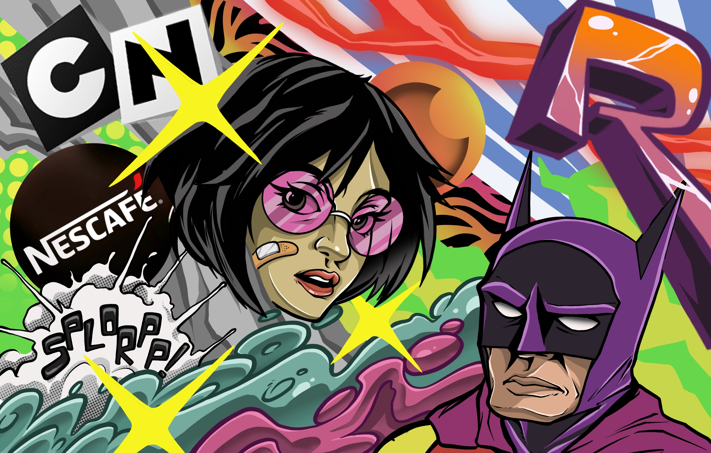
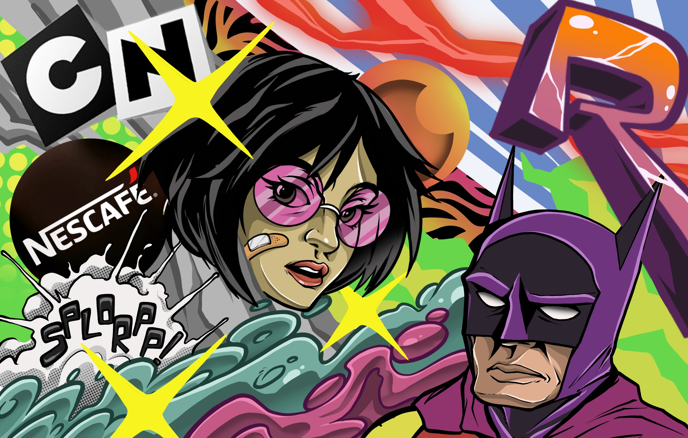
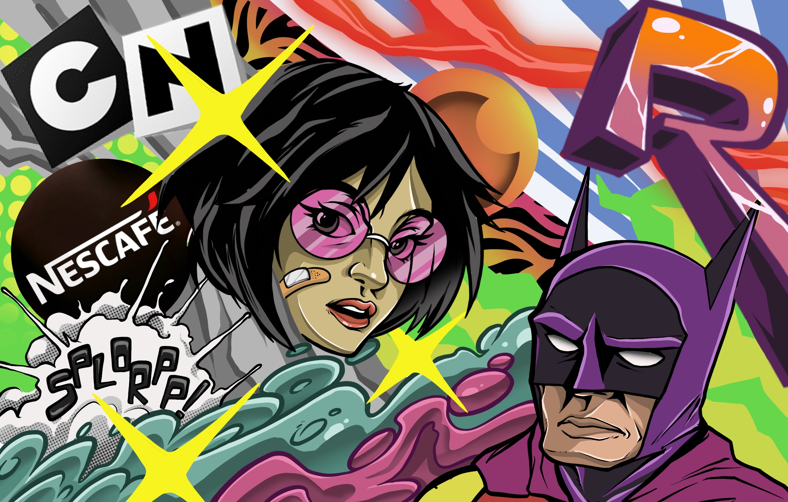

Home Gallery About Videos Tips and Tricks Public Q and A Instagram Hello, My name is John Padron, better known as “Remer”. I was born and raised in San Antonio Texas, and for as long as i can remember ive been an artist.As an artist, I think the need for supportive communities could be more emphasized. The need for informative, encouraging and guiding voices around you helps you stay motivated, eager, and attentive to wanting to progress and thrive in pursuing your goals.
 
